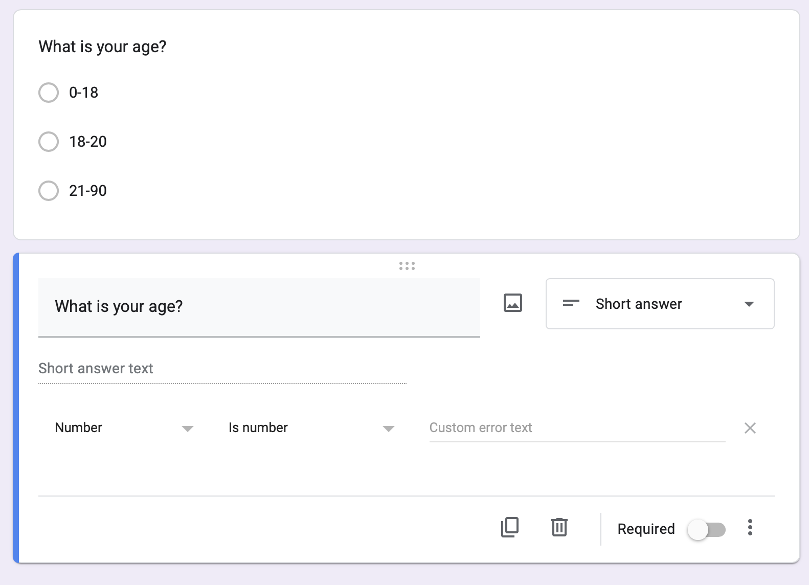

d <- read.csv("~/Dropbox/!WHY STATS/Class Datasets/101 - Class Datasets - FA25/mini_cal_data.csv")
par(mfrow = c(1,2))
plot(d$insta.follows, main = "Insta Follows in 'Raw' Units")
plot(scale(d$insta.follows), main = "Insta Follows in 'Z-Score' Units")Week 5 - ‘Normal’ Data
Check-In : Review Time!

Check-in uses the mini-data from Lab 3 (in the Dropbox Dataset Folder).
“Practice for Exam” Google Doc. Create a copy of this document, and practice inputting your answers like you will for the R Exam next week.
Professor R Script(will update as professor works…name ur dataset d to follow along)
Load the dataset into R. Print the number of individuals in the dataset. Print the names of the variables in the dataset. Remember to screenshot both your code and output.
The variable stoned72 describes whether students self-reported whether they used marijuana in the last 72 hours. Graph this variable. Below the graph, report the frequency of each group, and describe what you observe.
The variables satlife, selfes, is.happy, and bored (negatively-keyed) all measure some form of well-being. Create a scale that is the combination of these four items. Report the alpha reliability of the scale (make sure to reverse-score the bored item). What do you observe about the reliability of these four items?
Now, combine the four items into one variable. Graph this variable, and report the mean, median, and standard deviation. Describe what you observe about this variable.
CHALLENGE : Use indexing to create two versions of the dataset; one that contains the students who said they were stoned, and one that contains students who said they were not stoned. Graph and calculate the mean of our well-being scale for these two datasets. Is there a difference in well-being between these two groups of students?
Announcements
Mini Exam is NEXT week [10/13]
take home; open-note; open-book; DO ON YOUR OWN.
held during normal class; 85 minutes (DSP students get extra time accommodations)
get 50% of your missed points back. learning is a process and exams kinda suck, so hope this helps take some of the pressure off.
Lab 5 (in discussion section) : do SP25 exam for practice (with a key); while GSI having Milestone #2 meetings. help others who are stuck if you finish early?
Milestone #2 : Will discuss today; get feedback in discussion section. Milestones counted as part of your lab assignment grade. #shrugemojigoeshere.
Tutoring / Extra Support :
D-lab no longer offering help.
Reaching out to some former students. Thx for your patience!
Student-student study groups. Hooray!
Agenda
3:10 - 4:00 | Check-In and Review
4:00 - 4:20 | Z-Score Review
4:20 - 4:30 | Break Time
4:30 - 5:00 | Reliability and Validity
5:00 - 6:00 | Project Workshop
Check-In Review
“Practice for Exam” Google Doc. Create a copy of this document, and practice inputting your answers like you will for the R Exam next week.
Professor R Script(will update as professor works…name ur dataset d to follow along)
Z-Scores
Raw Units : the individual’s score.
Z-Score Units : how far the individual score is from the mean, in units of standard deviation.
Reliability and Validity
- Relevance to Psychological Science
- Relevance to Real-Life.

1 Brandt, D. J., Sommer, J., Krach, S., Bedenbender, J., Kircher, T., Paulus, F. M., & Jansen, A. (2013). Test-retest reliability of fMRI brain activity during memory encoding. Frontiers in psychiatry, 4, 163. [Link to Full Article]
2 Bennett, C. M., Miller, M. B., & Wolford, G. L. (2009). Neural correlates of interspecies perspective taking in the post-mortem Atlantic Salmon: an argument for multiple comparisons correction. Neuroimage, 47(Suppl 1), S125. [Link to Full Article]
How would you evaluate the reliability and validity of the STEP COUNTER on your phone???
| Term | Way of Testing |
| face : does our measure or result look like what it should look like? | |
| convergent : is our measure similar to related concepts? | |
| discriminant : is our measure different from unrelated concepts? | |
| test-retest : do we get the same result if we take multiple measures? | |
| interrater reliability : would another observer make the same measurements? | |
| inter-item reliability : would one item in the likert scale be related to others? |
BREAK TIME : MEET BACK AT 4:30

Final Project Workshop
Milestone #2
Student Examples Go Here.
Milestone #3 : Launching Your Study (Google Forms)
Make sure your DV is measured numerically. A likert scale or number response is fine.
Use Multiple Choice Grid for likert scales.
- Each row is an item.
- Use a 1-5 scale to make it easy for participants to answer.
- Try to make all the items fit on the same “stem”, so it’s easier for participants to get in the flow.
- I do not require responses; good to let folks skip questions if they want (and know to exclude their data) rather than force them to give an answer, which might be bad data.
- You could add an “attention check” (e.g., “Mark Strongly Agree for this question.”) if you are worried about people not taking your survey seriously. But BETTER to just keep the survey short, and give your participant some motivation (“I can send you the results of my paper if you want!”)

Include demographic variables like age and sex; give people options to self-identify as something outside a forced binary!
Keep categorical variables to just a few levels; you will need a LOT of data to capture variation if there are too many levels! 3-4 groups per variable.

Make sure categorical variables are not better measured numerically; set “response validation” for any open-ended numbers you hope to collect to make data cleaning easier.

Make sure each variable is measured independently of the others. For example, if I want to measure the relationship between happiness and reading, I would want to measure these separately.
- I am happy.
- I like to read.
Reading makes me happy.This mixes up the two variables (the DV and IV). It could be a cool measure on its own (love for reading scale?).